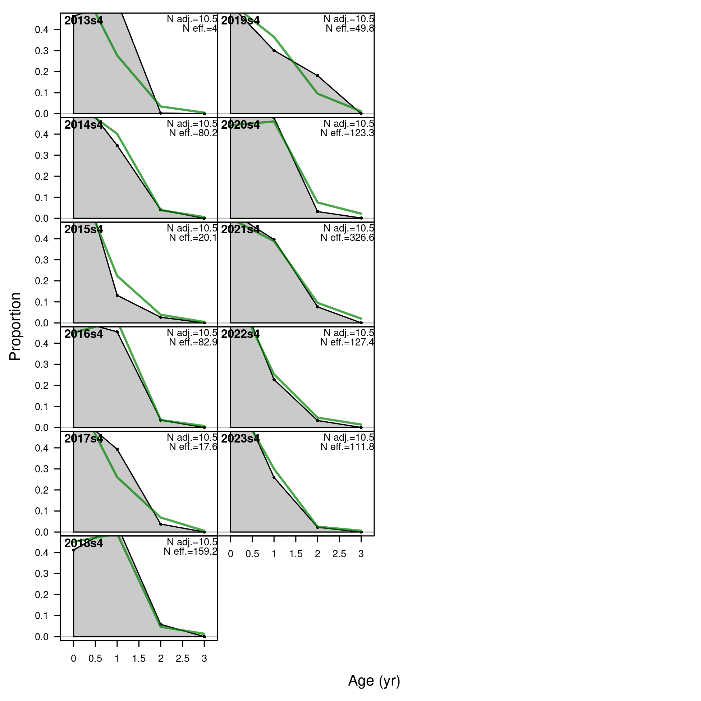

Age comps, aggregated across time by fleet.
Labels 'retained' and 'discard' indicate discarded or retained sampled for each fleet. Panels without this designation represent the whole catch.
file: comp_agefit__aggregated_across_time.png
Pearson residuals, comparing across fleets (plot 1 of 2)
Closed bubbles are positive residuals (observed > expected) and open bubbles are negative residuals (observed < expected).
file: comp_agefit__page1_multi-fleet_comparison.png
Pearson residuals, comparing across fleets (plot 2 of 2)
file: comp_agefit__page2_multi-fleet_comparison.png
Age comps, whole catch, SEINE_Q1 (plot 1 of 2).
'N adj.' is the input sample size after data-weighting adjustment. N eff. is the calculated effective sample size used in the McAllister-Ianelli tuning method.
file: comp_agefit_flt1mkt0_page1.png
Age comps, whole catch, SEINE_Q1 (plot 1 of 2).
'N adj.' is the input sample size after data-weighting adjustment. N eff. is the calculated effective sample size used in the McAllister-Ianelli tuning method. (plot 2 of 2)
file: comp_agefit_flt1mkt0_page2.png
Pearson residuals, whole catch, SEINE_Q1 (max=2.22) (plot 2 of 2)
Closed bubbles are positive residuals (observed > expected) and open bubbles are negative residuals (observed < expected).
file: comp_agefit_residsflt1mkt0_page2.png
N-EffN comparison, Age comps, whole catch, SEINE_Q1
file: comp_agefit_sampsize_flt1mkt0.png
Mean age for SEINE_Q1 with 95% confidence intervals based on current sample sizes.
Francis data weighting method TA1.8: thinner intervals (with capped ends) show result of further adjusting sample sizes based on suggested multiplier (with 95% interval) for age data from SEINE_Q1:
1.3436 (0.8386-2.8747)
For more info, see Francis (2011).
file: comp_agefit_data_weighting_TA1-8_SEINE_Q1.png
Age comps, whole catch, SEINE_Q2 (plot 1 of 2).
'N adj.' is the input sample size after data-weighting adjustment. N eff. is the calculated effective sample size used in the McAllister-Ianelli tuning method.
file: comp_agefit_flt2mkt0_page1.png

Age comps, whole catch, SEINE_Q2 (plot 1 of 2).
'N adj.' is the input sample size after data-weighting adjustment. N eff. is the calculated effective sample size used in the McAllister-Ianelli tuning method. (plot 2 of 2)
file: comp_agefit_flt2mkt0_page2.png

Pearson residuals, whole catch, SEINE_Q2 (max=1.92) (plot 2 of 2)
Closed bubbles are positive residuals (observed > expected) and open bubbles are negative residuals (observed < expected).
file: comp_agefit_residsflt2mkt0_page2.png
N-EffN comparison, Age comps, whole catch, SEINE_Q2
file: comp_agefit_sampsize_flt2mkt0.png
Mean age for SEINE_Q2 with 95% confidence intervals based on current sample sizes.
Francis data weighting method TA1.8: thinner intervals (with capped ends) show result of further adjusting sample sizes based on suggested multiplier (with 95% interval) for age data from SEINE_Q2:
1.7086 (0.8093-5.8516)
For more info, see Francis (2011).
file: comp_agefit_data_weighting_TA1-8_SEINE_Q2.png
Age comps, whole catch, SEINE_Q3 (plot 1 of 2).
'N adj.' is the input sample size after data-weighting adjustment. N eff. is the calculated effective sample size used in the McAllister-Ianelli tuning method.
file: comp_agefit_flt3mkt0_page1.png
Age comps, whole catch, SEINE_Q3 (plot 1 of 2).
'N adj.' is the input sample size after data-weighting adjustment. N eff. is the calculated effective sample size used in the McAllister-Ianelli tuning method. (plot 2 of 2)
file: comp_agefit_flt3mkt0_page2.png
Pearson residuals, whole catch, SEINE_Q3 (max=2.84) (plot 2 of 2)
Closed bubbles are positive residuals (observed > expected) and open bubbles are negative residuals (observed < expected).
file: comp_agefit_residsflt3mkt0_page2.png
N-EffN comparison, Age comps, whole catch, SEINE_Q3
file: comp_agefit_sampsize_flt3mkt0.png
Mean age for SEINE_Q3 with 95% confidence intervals based on current sample sizes.
Francis data weighting method TA1.8: thinner intervals (with capped ends) show result of further adjusting sample sizes based on suggested multiplier (with 95% interval) for age data from SEINE_Q3:
1.3196 (0.917-2.4575)
For more info, see Francis (2011).
file: comp_agefit_data_weighting_TA1-8_SEINE_Q3.png
Age comps, whole catch, SEINE_Q4 (plot 1 of 2).
'N adj.' is the input sample size after data-weighting adjustment. N eff. is the calculated effective sample size used in the McAllister-Ianelli tuning method.
file: comp_agefit_flt4mkt0_page1.png

Age comps, whole catch, SEINE_Q4 (plot 1 of 2).
'N adj.' is the input sample size after data-weighting adjustment. N eff. is the calculated effective sample size used in the McAllister-Ianelli tuning method. (plot 2 of 2)
file: comp_agefit_flt4mkt0_page2.png
Pearson residuals, whole catch, SEINE_Q4 (max=2.64) (plot 2 of 2)
Closed bubbles are positive residuals (observed > expected) and open bubbles are negative residuals (observed < expected).
file: comp_agefit_residsflt4mkt0_page2.png
N-EffN comparison, Age comps, whole catch, SEINE_Q4
file: comp_agefit_sampsize_flt4mkt0.png
Mean age for SEINE_Q4 with 95% confidence intervals based on current sample sizes.
Francis data weighting method TA1.8: thinner intervals (with capped ends) show result of further adjusting sample sizes based on suggested multiplier (with 95% interval) for age data from SEINE_Q4:
0.9198 (0.5243-2.227)
For more info, see Francis (2011).
file: comp_agefit_data_weighting_TA1-8_SEINE_Q4.png
Age comps, whole catch, PELAGO.
'N adj.' is the input sample size after data-weighting adjustment. N eff. is the calculated effective sample size used in the McAllister-Ianelli tuning method.
file: comp_agefit_flt5mkt0.png
Pearson residuals, whole catch, PELAGO (max=1.78)
Closed bubbles are positive residuals (observed > expected) and open bubbles are negative residuals (observed < expected).
file: comp_agefit_residsflt5mkt0.png
N-EffN comparison, Age comps, whole catch, PELAGO
file: comp_agefit_sampsize_flt5mkt0.png
Mean age for PELAGO with 95% confidence intervals based on current sample sizes.
Francis data weighting method TA1.8: thinner intervals (with capped ends) show result of further adjusting sample sizes based on suggested multiplier (with 95% interval) for age data from PELAGO:
1.9983 (0.9632-18.24)
For more info, see Francis (2011).
file: comp_agefit_data_weighting_TA1-8_PELAGO.png
Age comps, whole catch, ECOCADIZ.
'N adj.' is the input sample size after data-weighting adjustment. N eff. is the calculated effective sample size used in the McAllister-Ianelli tuning method.
file: comp_agefit_flt6mkt0.png
Pearson residuals, whole catch, ECOCADIZ (max=1.38)
Closed bubbles are positive residuals (observed > expected) and open bubbles are negative residuals (observed < expected).
file: comp_agefit_residsflt6mkt0.png
N-EffN comparison, Age comps, whole catch, ECOCADIZ
file: comp_agefit_sampsize_flt6mkt0.png
Mean age for ECOCADIZ with 95% confidence intervals based on current sample sizes.
Francis data weighting method TA1.8: thinner intervals (with capped ends) show result of further adjusting sample sizes based on suggested multiplier (with 95% interval) for age data from ECOCADIZ:
4.7594 (2.7821-12.6592)
For more info, see Francis (2011).
file: comp_agefit_data_weighting_TA1-8_ECOCADIZ.png
Age comps, whole catch, ECORECLUTAS.
'N adj.' is the input sample size after data-weighting adjustment. N eff. is the calculated effective sample size used in the McAllister-Ianelli tuning method.
file: comp_agefit_flt8mkt0.png
Pearson residuals, whole catch, ECORECLUTAS (max=2.87)
Closed bubbles are positive residuals (observed > expected) and open bubbles are negative residuals (observed < expected).
file: comp_agefit_residsflt8mkt0.png
N-EffN comparison, Age comps, whole catch, ECORECLUTAS
file: comp_agefit_sampsize_flt8mkt0.png
Mean age for ECORECLUTAS with 95% confidence intervals based on current sample sizes.
Francis data weighting method TA1.8: thinner intervals (with capped ends) show result of further adjusting sample sizes based on suggested multiplier (with 95% interval) for age data from ECORECLUTAS:
1.1541 (0.7369-16.1224)
For more info, see Francis (2011).
file: comp_agefit_data_weighting_TA1-8_ECORECLUTAS.png
{kind=link}
{kind=link}
{kind=link}
{kind=link}
{kind=link}
{kind=link}
{kind=link}
{kind=link}
{kind=link}
{kind=link}
{kind=link}
{kind=link}
{kind=link}
{kind=link}
{kind=link}
{kind=link}
{kind=link}
{kind=link}
{kind=link}
{kind=link}
{kind=link}
{kind=link}
{kind=link}
{kind=link}
{kind=link}
{kind=link}
{kind=link}
{kind=link}
{kind=link}
{kind=link}
{kind=link}
{kind=link}
{kind=link}